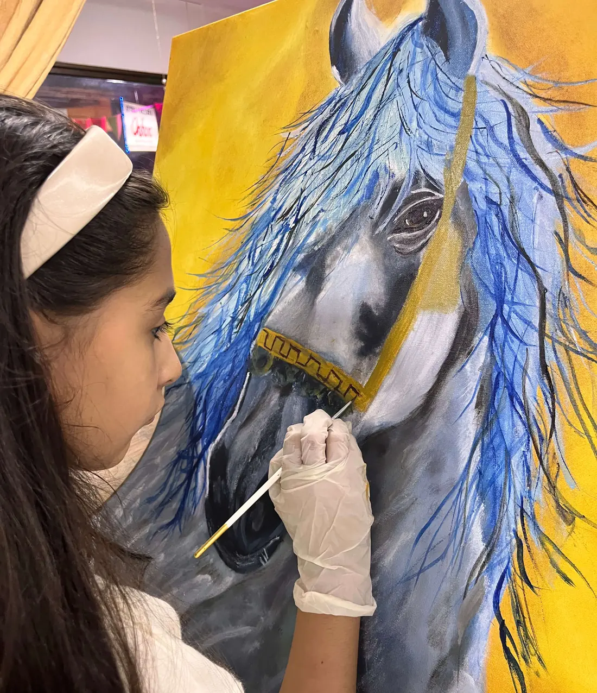
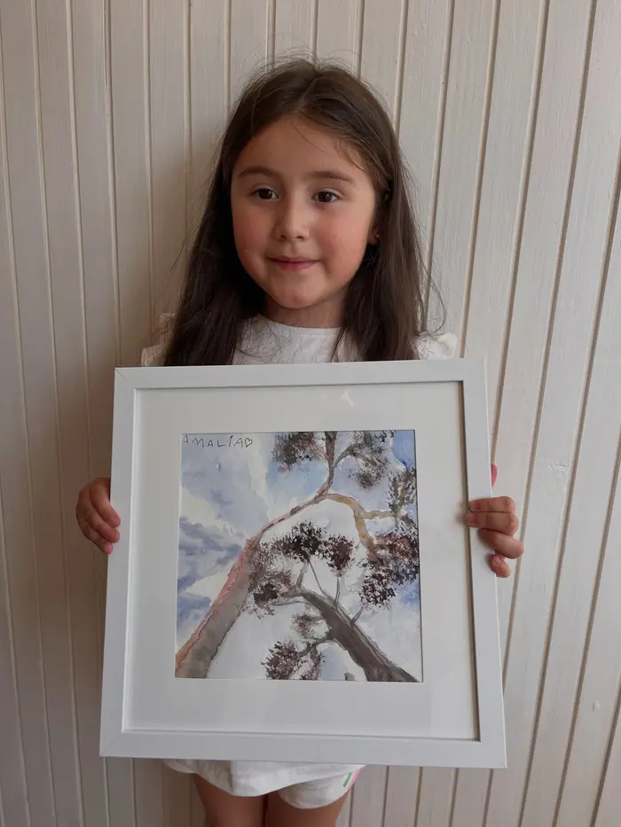
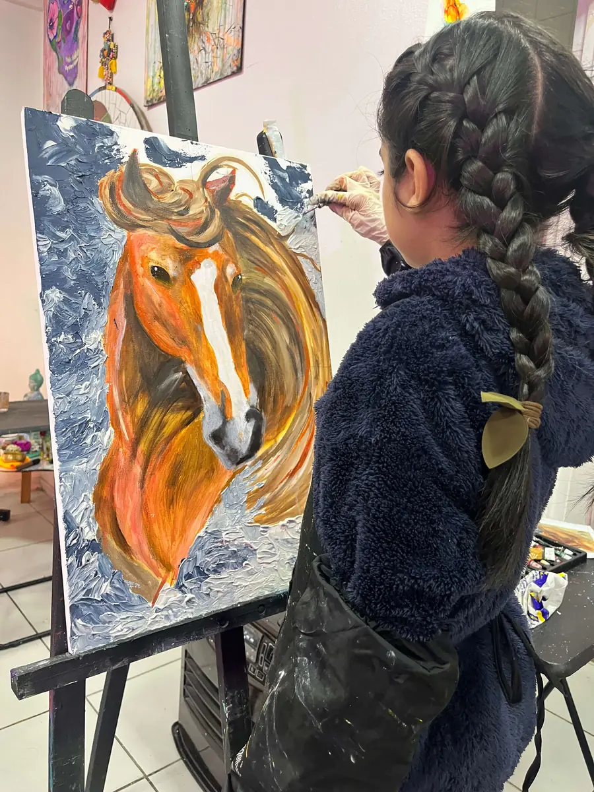
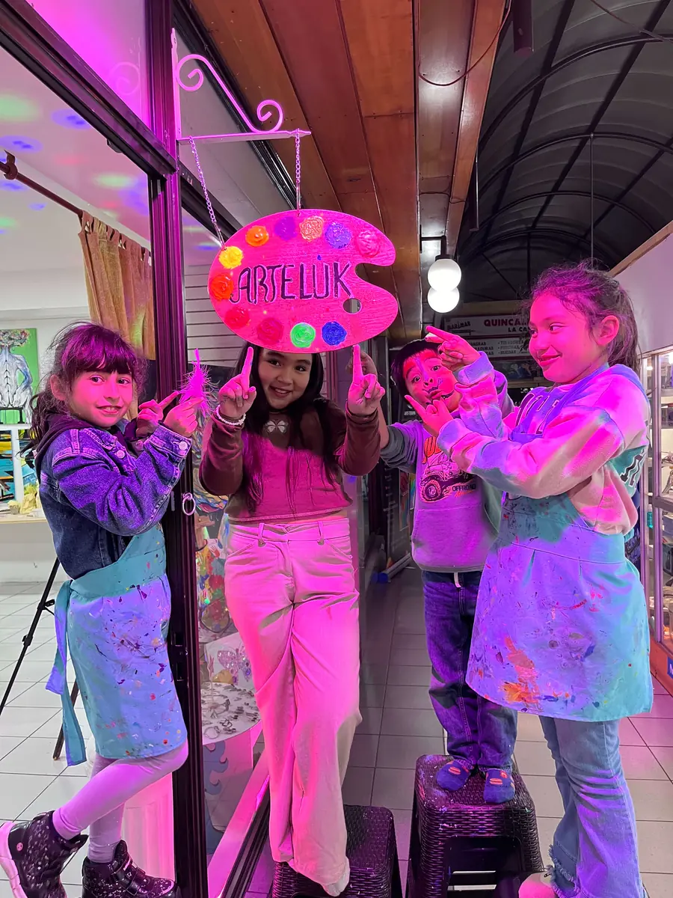
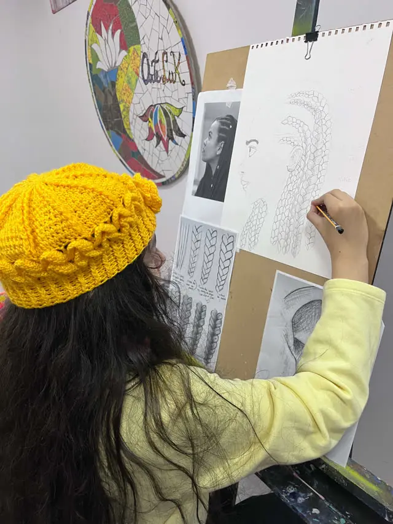
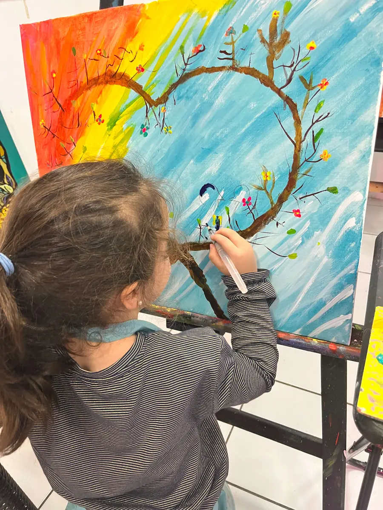
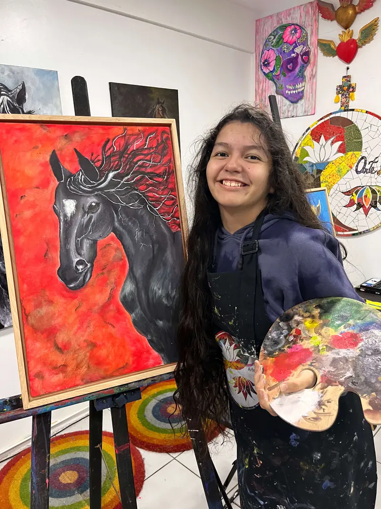
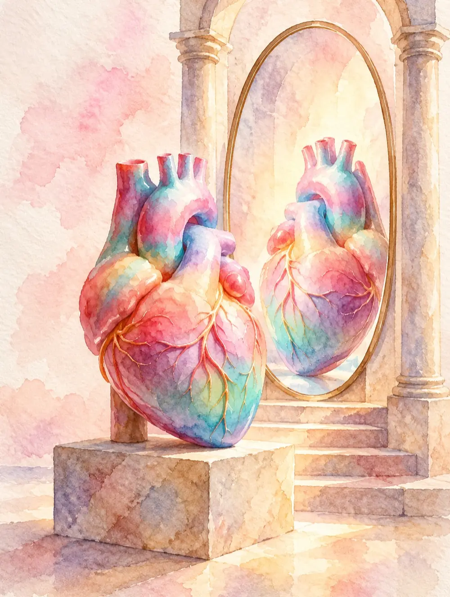
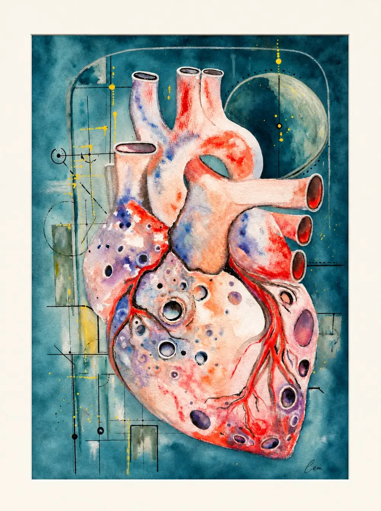

Valdivia · desde los 5 años
Un taller donde tu hijo pinta, se equivoca tranquilo y vuelve a creer en lo que hace.
Clases de arte y arteterapia en grupos de máximo 6, armados por edad. Acrílico, acuarela, óleo y dibujo, con profesoras que miran a cada niño.

Por dónde empezar
Cuatro formas de llegar a Arteluk.

Clase de prueba
2 horas, materiales incluidos. Hace su propia acuarela y se la lleva enmarcada.
$20.000escribiendo por WhatsApp
Talleres mensuales
Acuarela, Dibujo, Artes o Premium. 4 clases al mes.
desde $45.000al mes
Cumpleaños de arte
La fiesta «Pintores Locos», sábados de 17:30 a 19:30.
$12.000por niño
Jornadas para empresas
Una pausa de autocuidado pintando, con coffee break.
a medidaescríbenos
Así es una clase
No solo enseñamos a pintar.
Cada clase tiene técnica, pero también un espacio para sentir, equivocarse y terminar algo de lo que se sienta orgulloso.
- 01
Llega y elige
Conversa con la profesora qué quiere pintar. En grupos de máximo 6, nadie queda perdido.
- 02
Primero el boceto
Aprende a mirar, medir y dibujar antes de tocar la pintura.
- 03
Después el color
Acuarela, acrílico u óleo, según su taller y su edad.
- 04
Su obra en la pared
Las mejores obras del año se exponen en centros culturales de Valdivia.




Sus obras salen a la calle
«Generación Arteluk»: 5.000 visitas en el Centro Cultural El Austral.
En septiembre de 2026 los alumnos colgaron sus obras en el Centro Cultural El Austral de Valdivia. Cada uno destapó su cuadro frente a su familia y recibió su diploma.
Ya llevamos 8 exposiciones: en el barco Neptuno, el Café Moro, la Universidad Santo Tomás, el Mall Nuevo Valdivia y más.
La fundadora
Mary Quinteros no solo enseña arte: también expone el suyo.
Arteterapeuta, magíster en Psicología Infantojuvenil y artista visual. En noviembre de 2026 presentó su serie «La Arquitectura del Ser» en Art Week Chile, en el Centro Cultural Estación Mapocho de Santiago.



En palabras de las familias
Lo que notan en la casa.
Aumentó muchísimo su concentración.
Ha tomado mucha confianza en sí misma.
No le gusta perderse las clases.
Ven a probar una clase.
2 horas, todos los materiales incluidos, y se lleva enmarcada la acuarela que hizo. Eliges el día y te llega la confirmación por WhatsApp.